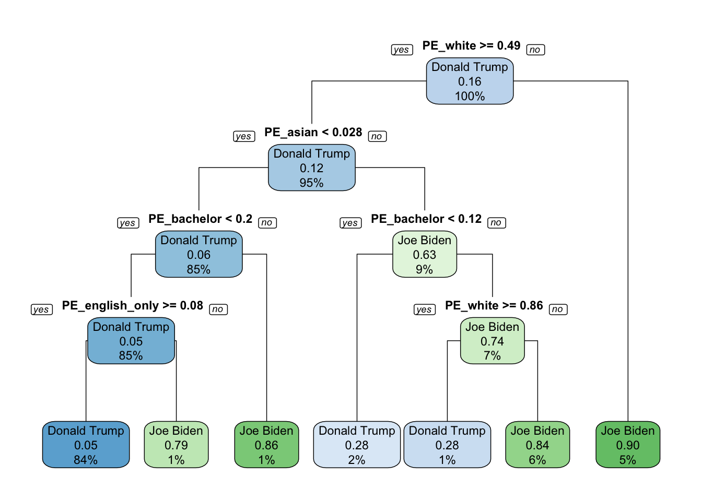

The decision tree can be interpreted as the following:
# split data
set.seed(3451)
data_split <- partition(election2$winner, p = c(train = 0.8, test = 0.2))
train <- election2[data_split$train, ]
test <- election2[data_split$test, ]# create a tree
model1 <- rpart(candidate ~ PE_bachelor + PE_lesshighschool + PE_veteran + PE_white +
PE_asian + PE_male_60 + PE_female_60 + PE_female_40 + PE_female_justadult +
PE_male_justadult + PE_income_middle + PE_income_high +
PE_income_low + PE_english_only,
data = train,
method = "class",
control = rpart.control(cp = 0.015))
rpart.plot(model1, yesno = 2, type = 1)
The quality of prediction can improve because:
Bagging uses the ensemble method instead of a single tree. Because of the aggregation process, bagging is able to reduce the high variance and potentially large prediction error that a single decision tree has.
It can also eliminate the overfitting of models through reducing the variance since bagging introduces a random component into the tree building process through bootstrapping.
The drawbacks of this method include:
This method cannot increase much predictive power for algorithms that are more stable or have high bias (i.e. low variability), such as linear regressions.
It can be computationally expensive.
There can be a loss of interpretability of a model.
It can result in tree correlation, which limits the effect of variance reduction.
set.seed(123)
model2 <- bagging(
formula = candidate ~ PE_bachelor + PE_lesshighschool + PE_veteran + PE_white +
PE_asian + PE_male_60 + PE_female_60 + PE_female_40 + PE_female_justadult +
PE_male_justadult + PE_income_middle + PE_income_high +
PE_income_low + PE_english_only,
data = train,
nbagg = 100,
coob = TRUE,
control = rpart.control(minsplit=2, cp=0)
)
print(model2)##
## Bagging classification trees with 100 bootstrap replications
##
## Call: bagging.data.frame(formula = candidate ~ PE_bachelor + PE_lesshighschool +
## PE_veteran + PE_white + PE_asian + PE_male_60 + PE_female_60 +
## PE_female_40 + PE_female_justadult + PE_male_justadult +
## PE_income_middle + PE_income_high + PE_income_low + PE_english_only,
## data = train, nbagg = 100, coob = TRUE, control = rpart.control(minsplit = 2,
## cp = 0))
##
## Out-of-bag estimate of misclassification error: 0.0735
The OOB’s rmse is 0.2378, and the Random Forest’s rmse is 0.2292, which is smaller. So this method of Random Forests has a slightly stronger predictive performance.
The advantages of random forests include:
It reduces tree correlation by injecting more randomness into the tree-growing process by creating a more diverse set of trees.
This method does not have a large variablity in its prediction accuracy when tuning.
The disadvantages of random forests include:
There are multiple hyperparameters that should be manually set.
Adding more hypoerparameters can be computationally expensive.
n_features <- length(setdiff(names(train), "candidate"))
model3 <- ranger(
candidate ~ PE_bachelor + PE_lesshighschool + PE_veteran + PE_white +
PE_asian + PE_male_60 + PE_female_60 + PE_female_40 + PE_female_justadult +
PE_male_justadult + PE_income_middle + PE_income_high +
PE_income_low + PE_english_only,
data = train,
mtry = floor(n_features / 3),
respect.unordered.factors = "order",
seed = 123
)
model3_rmse <- sqrt(model3$prediction.error)
print(model3)## Ranger result
##
## Call:
## ranger(candidate ~ PE_bachelor + PE_lesshighschool + PE_veteran + PE_white + PE_asian + PE_male_60 + PE_female_60 + PE_female_40 + PE_female_justadult + PE_male_justadult + PE_income_middle + PE_income_high + PE_income_low + PE_english_only, data = train, mtry = floor(n_features/3), respect.unordered.factors = "order", seed = 123)
##
## Type: Classification
## Number of trees: 500
## Sample size: 2434
## Number of independent variables: 14
## Mtry: 8
## Target node size: 1
## Variable importance mode: none
## Splitrule: gini
## OOB prediction error: 6.70 %
# single decision tree
predict_model1_test <- predict(model1, test, type = 'class')
confusionMatrix(predict_model1_test, test$candidate)## Confusion Matrix and Statistics
##
## Reference
## Prediction Donald Trump Joe Biden
## Donald Trump 493 29
## Joe Biden 20 68
##
## Accuracy : 0.9197
## 95% CI : (0.8952, 0.94)
## No Information Rate : 0.841
## P-Value [Acc > NIR] : 5.958e-09
##
## Kappa : 0.6879
##
## Mcnemar's Test P-Value : 0.2531
##
## Sensitivity : 0.9610
## Specificity : 0.7010
## Pos Pred Value : 0.9444
## Neg Pred Value : 0.7727
## Prevalence : 0.8410
## Detection Rate : 0.8082
## Detection Prevalence : 0.8557
## Balanced Accuracy : 0.8310
##
## 'Positive' Class : Donald Trump
## # bagging
predict_model2_test <- predict(model2, test, type="class")
confusionMatrix(predict_model2_test, test$candidate)## Confusion Matrix and Statistics
##
## Reference
## Prediction Donald Trump Joe Biden
## Donald Trump 491 24
## Joe Biden 22 73
##
## Accuracy : 0.9246
## 95% CI : (0.9007, 0.9443)
## No Information Rate : 0.841
## P-Value [Acc > NIR] : 5.18e-10
##
## Kappa : 0.7157
##
## Mcnemar's Test P-Value : 0.8828
##
## Sensitivity : 0.9571
## Specificity : 0.7526
## Pos Pred Value : 0.9534
## Neg Pred Value : 0.7684
## Prevalence : 0.8410
## Detection Rate : 0.8049
## Detection Prevalence : 0.8443
## Balanced Accuracy : 0.8548
##
## 'Positive' Class : Donald Trump
## # random forest
predict_model3_test <- predict(model3, test, type="response",se.method="infjack" )
confusionMatrix(predict_model3_test$predictions, test$candidate)## Confusion Matrix and Statistics
##
## Reference
## Prediction Donald Trump Joe Biden
## Donald Trump 492 24
## Joe Biden 21 73
##
## Accuracy : 0.9262
## 95% CI : (0.9025, 0.9457)
## No Information Rate : 0.841
## P-Value [Acc > NIR] : 2.193e-10
##
## Kappa : 0.7207
##
## Mcnemar's Test P-Value : 0.7656
##
## Sensitivity : 0.9591
## Specificity : 0.7526
## Pos Pred Value : 0.9535
## Neg Pred Value : 0.7766
## Prevalence : 0.8410
## Detection Rate : 0.8066
## Detection Prevalence : 0.8459
## Balanced Accuracy : 0.8558
##
## 'Positive' Class : Donald Trump
##
The predictions using train data have a higher accuracy than predictions using test data because the models were built using the train data.
# single decision tree
predict_model1_train <- predict(model1, train, type = 'class')
confusionMatrix(predict_model1_train, train$candidate)## Confusion Matrix and Statistics
##
## Reference
## Prediction Donald Trump Joe Biden
## Donald Trump 2005 120
## Joe Biden 43 266
##
## Accuracy : 0.933
## 95% CI : (0.9224, 0.9426)
## No Information Rate : 0.8414
## P-Value [Acc > NIR] : < 2.2e-16
##
## Kappa : 0.727
##
## Mcnemar's Test P-Value : 2.636e-09
##
## Sensitivity : 0.9790
## Specificity : 0.6891
## Pos Pred Value : 0.9435
## Neg Pred Value : 0.8608
## Prevalence : 0.8414
## Detection Rate : 0.8237
## Detection Prevalence : 0.8730
## Balanced Accuracy : 0.8341
##
## 'Positive' Class : Donald Trump
## # bagging
predict_model2_train <- predict(model2, train, type="class")
confusionMatrix(predict_model2_train, train$candidate)## Confusion Matrix and Statistics
##
## Reference
## Prediction Donald Trump Joe Biden
## Donald Trump 2048 0
## Joe Biden 0 386
##
## Accuracy : 1
## 95% CI : (0.9985, 1)
## No Information Rate : 0.8414
## P-Value [Acc > NIR] : < 2.2e-16
##
## Kappa : 1
##
## Mcnemar's Test P-Value : NA
##
## Sensitivity : 1.0000
## Specificity : 1.0000
## Pos Pred Value : 1.0000
## Neg Pred Value : 1.0000
## Prevalence : 0.8414
## Detection Rate : 0.8414
## Detection Prevalence : 0.8414
## Balanced Accuracy : 1.0000
##
## 'Positive' Class : Donald Trump
## # random forest
predict_model3_train <- predict(model3, train, type="response",se.method="infjack" )
table(train$candidate, predict_model3_train$predictions)##
## Donald Trump Joe Biden
## Donald Trump 2048 0
## Joe Biden 0 386